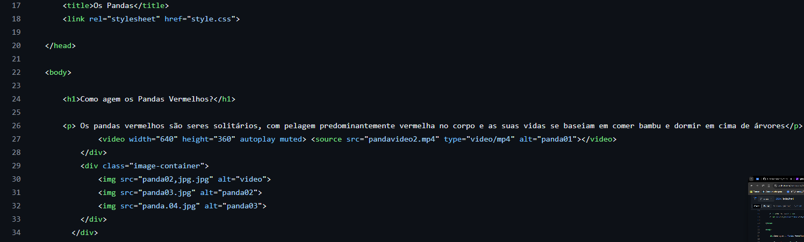

Usamos diversos comandos para fazer um site e os mais comuns são o div, img src, link rel, sendo usados como no exemplo a seguir.
A tag div usado para a categorização de elementos do site como, por exemplo, coloquei o div para caetgorizar as imagens que escolhi no meu site; Aimg src serve para adicionar imagens ao código, sendo possível quando se coloca a imagem na pasta do seu site, que vai ser realocado com a necessidade; Por fim, o link, mais especificamente o rel, serve para que o html reconheça que os somandos inseridos aqui e personalizados no style.css funcionem como o esperado do style.css.